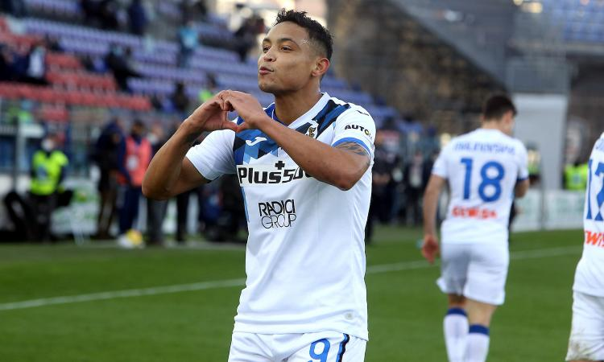

Muriel all'ultimo, colpo Samp, bene anche il Sassuolo. Roma forza 3!
Il gol di Muriel regala i 3 punti all'Atalanta contro un bel Cagliari, mentre l'asse Candreva-Quagliarella si rivela mossa vincente per Ranieri e per la Sampdoria, che batte 2-1 la Fiorentina. Torna a sorridere il Sassuolo contro il Crotone, grazie ai gol di Berardi e Caputo, mentre la Roma si gode Jordan Veretout e Pedro. Stasera invece Verona-Parma, con D'Aversa che si affida all'imprevedibilità di Zirkzee
Il WBA ferma lo United: 1-1
Buon punto per il WBA, che riesce a fermare lo United nonostante il supergol del solito Bruno Fernandes
Clicca qui per gli altri risultatiAndrè Silva non si ferma piu'!
Ennesimo gol per Andrè Silva, che trascina l'Eintracht nella vittoria contro il Colonia. Di N'Dicka l'altra marcatura
Clicca qui per gli altri risultatiSala Var
Corretto dare il rigore all'Inter, evidente il fallo di Hoedt su Lukaku.Ottime anche le decisioni di non assegnare un rigore all'Atalanta per presunto fallo di Godin su Muriel e di annullare la rete di Muldur per il 3-1 del Sassuolo.Capitolo Roma-Udinese: ottima la chiamata del guardalinee per il fuorigioco di Pellegrini.